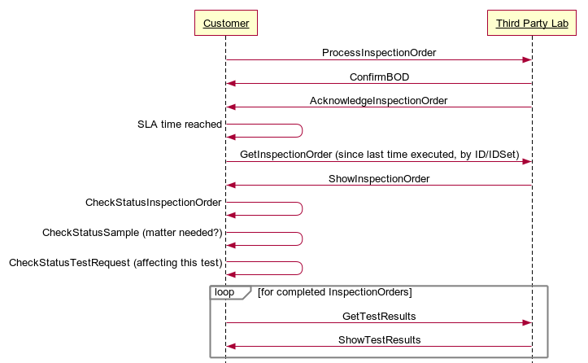

Scenario 74 - Standalone MRP to Standalone MES74.0 OverviewScenario #74 describes the integration of business software involved with the process of a customer requesting the status from a third party laboratory who has previously been requested to perform lab tests on customer provided samples, and test results have not been received by the Customer according the predefined time limit specified in the contracted Service Level Agreement. The Customer requests status from the Third Party Lab via the GetInspectionOrder BOD, and status and planned completion is communicated by Third Party Lab to the Customer using the ShowInspectionOrder BOD.The purpose of this scenario is to describe the participants in a mainstream business process, and to illustrate how the business systems of those participants can be integrated through messages exchange to realize the goals of that business process. This scenario is not meant to be the only model for integrating customer applications to lab information management applications. It is simply one model that may be used to guide one's own integration efforts. Since the function and composition of the business software components that might be used to produce or exchange the information described in the scenario vary widely, specific software components will not be described. Software components which might be involved in realizing this scenario include:
74.1 Scenario DiagramThe scenario below contains the participants involved in the interaction, the dialog flows or conversation between them, certain assumptions about the sequence of events, and assumptions about the technical approach.This is a model to be used as a design recommendation, not a required approach.  74.2 AssumptionsThis scenario assumes a loosely coupled, asynchronous approach with transaction management required but not explicitly defined.This scenario describes how one or more components of a Customer’s business systems can interact with the business system of a Third Party Laboratory for testing services. The term Third Party Lab can be substituted simply as ‘Lab’ if the lab is internal to an organization. The manual creation and barcode labeling of samples labeled in accordance with the associated InspectionOrder is required but not depicted. Barcode labeling of individual samples and the creation of a manifest showing all shipped samples is highly recommended. The manual exchange, from the Customer to the Third Party Laboratory, of the labeled samples upon which testing is to be performed is required but not depicted. There may be instances where all of the data necessary to accomplish the business goal is contained in the documents and other instances where additional binary information accompanies the InspectionOrder. 74.3 Participant DefinitionsThis scenario contains two major application: Enterprise Resource Planning (ERP) or Farm Management Information System (FMIS), and a Lab’s Lab Information Management System (LIMS). The definitions and details of these applications are left to the designer but are assumed to contain the functionality as defined by what is commonly sold in the commercial marketplace today. This definition is broadly accepted by the scenario designers and is a direct result of the decision not to define how the processing takes place within any individual application.Typical capabilities of these participants are described:
The most important factors in defining these participants is to ensure that an integration designer can communicate the requirements precisely enough to specify and design the integration processes needed and their interrelationships. Note that the evolution of eCommerce has yielded independent trading exchanges and other intermediaries between business operations and inventory management providers. Requirements and operations for intermediaries should be similar to direct links between the two components. 74.4 Business Workflow (Sequence)The business workflow is graphically represented by starting at the Scenario top and reading from top down and from left to right. The arrows in a sequence diagrams shows the message exchanged, and the response to the message. A ConfirmBOD provides an acknowledge to the initial request that the original request was received and understood as a valid. The Acknowledge(noun) message indicates that the transaction was processed (committed), and a business person has reviewed and provided information related to the next step (accepted, rejected, etc.).The exchange of OAGIS BODs such as the GetTestResults and ShowTestResults may follow several different workflows depending on the capabilities of the customer submitting the InspectionOrder. For example, the Third Party Lab can publish the test results to the Customer’s application directly using the ProcessTestResults, and the Customer would response with a ConfirmBOD and AcknowledgeTestResults. The sequence diagram illustrates the data exchanges involved within the business process.
74.5 Exception HandlingException handling is highly localized as the result of an implementation's infrastructure, management and business rules. As such, this section of the Scenario documentation is planned to be used as a guide to help understand the additional intent of these Scenarios. If no exceptions are noted here, then it can be assumed that the Scenario designers agreed that the Scenario is straight forward and has no additional needs:
Copyright OAGi 2017 - All Rights Reserved -- OAGIS release 10.4 - Document Number: 20170420-74-CheckInspectionOrderStatus |